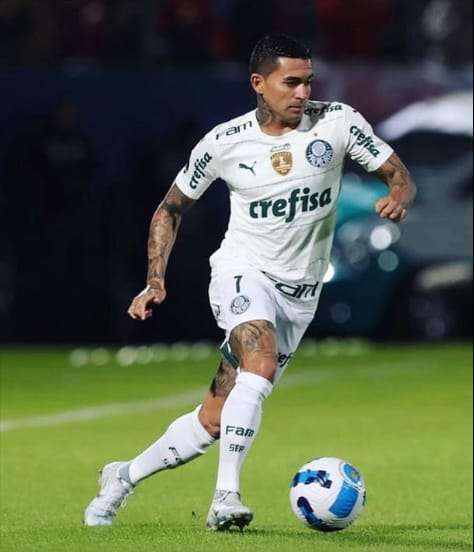
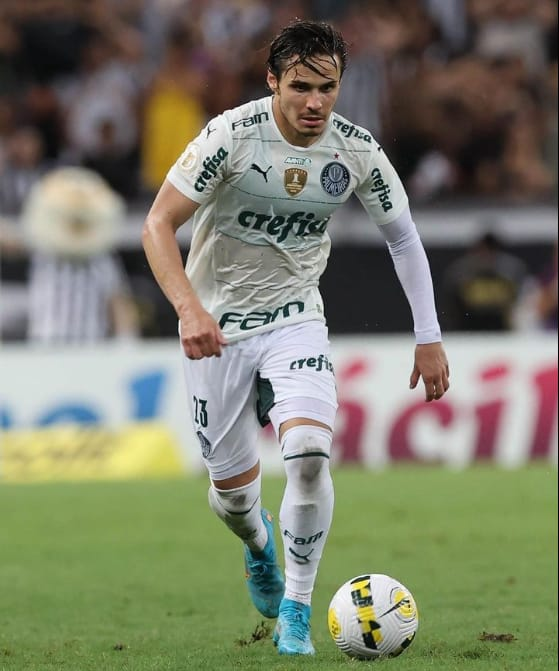

-
Dudu
Ponta Esquerda
Descrição
Dudu se isola como jogador do Palmeiras com mais títulos no século. Cada vez mais bem posicionado nas prateleiras de ídolos da história do Palmeiras, Dudu atingiu uma marca importante no domingo. Com a conquista do Campeonato Paulista, o atacante se isolou como o jogador com mais títulos pelo Verdão neste século.
-
Veiga
Meia Ofensivo
Descrição
Raphael Cavalcante Veiga, conhecido simplesmente como Raphael Veiga, é um futebolista brasileiro que atua como meio-campista e ponta-direita.O camisa 23 tem sido considerado como o melhor jogador não só do Palmeiras, mas da temporada do futebol brasileiro em 2022, com muitos comentaristas e torcedores pedindo a sua presença na Seleção Brasileira, do técnico Tite, para a Copa do Qatar.
-
Piquerez
Lateral Esquerdo
Descrição
Joaquín Piquerez Moreira é um futebolista uruguaio que atua como lateral-esquerdo. O jogador ganhou destaque na campanha do Peñarol que eliminou o Corinthians ainda na fase de grupos, da Copa Sul-Americana desta temporada. O lateral possui características mais defensivas